Analisis de situacion de Paises

Base de datos proporcionada por Academia Desafío Latam, este es un análisis que se realizó en un taller de acuerdo con el ejercicio propuesto por la academia.
Trabajaremos con el dataset 'nations', el cual contiene información sobre diferentes atributos de desarrollo humano en 194 países, recolectados por las Naciones Unidas.
- `country`: País.
- `region`: Continente del país.
- `gdp`: Producto Interno Bruto per cápita, precios 2005.
- `school`: Promedio años de escolaridad.
- `adfert`: Fertilidad adolescente (Nacimientos 1:1000 en mujeres entre 15 y 19).
- `chldmort`: Probabilidad de muerte antes de los 5 años por cada 1000.
- `life`: Esperanza de vida al nacer.
- `pop`: Población total.
- `urban`: Porcentaje de población urbana.
- `femlab`: Tasa entre hombres y mujeres en el mercado laboral.
- `literacy`: Tasa de alfabetismo.
- `co2`: Toneladas de Co2 emitidas per cápita.
- `gini`: Coeficiente de desigualdad del ingreso.
Se pide un head para ver como es la distribución de la base de datos.
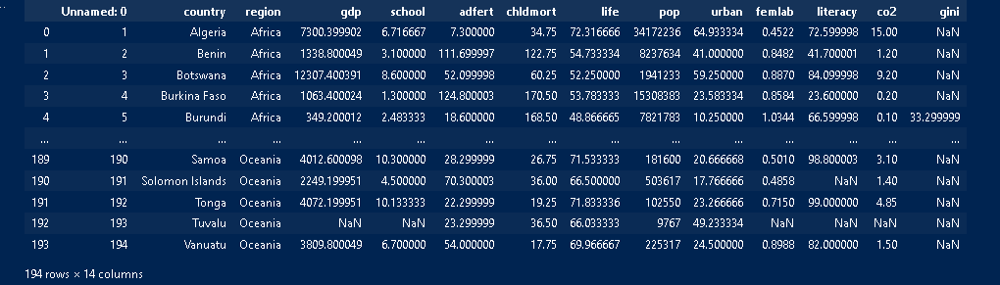Se elimina la columna que es irrelevante “unnamed”.
Las interrogantes del taller orbitan estas 4 preguntas principales:
-
¿Qué tipos de atributos encontramos en el dataset?
-
¿Cuántos datos tenemos en cada región?
-
¿Cuántos países tienen índices de CO2 mayores que el promedio?
-
¿Qué se puede decir del alfabetismo en África o Europa?
Procedemos a ver como son los tipos de datos.
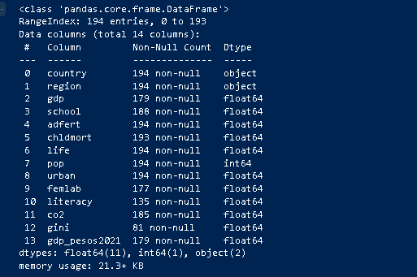A los numéricos podremos verlo como un cuadro de describe().
Esto responde la pregunta 1
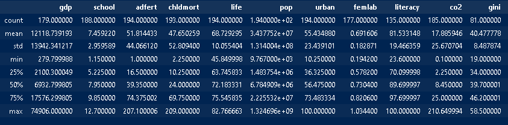La siguiente pregunta ¿Cuántos datos tenemos en cada región?
Para esto veremos un cuadro de agrupación.
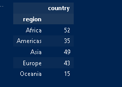¿Cuántos países tienen índice de Co2 mayores a la media?
Para esto primero podemos hacer una nueva característica que llamaremos co2_recodificada, que tenga el valor 1 si el valor de C02 del país es mayo al valor de la Media de todos los registros de Co2.
Ahora vamos a pedir que nos de un conteo de cada uno de los 2 valores que puede tener Co2_recodificada, donde:
0=El país tiene índice de Co2 igual o menor que la media
1=El país tiene índice de Co2 mayor que la media
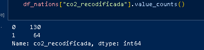Con lo que podemos ver que la cantidad de países que tienen un índice de Co2 mayores a la media son 64.
¿Qué se puede decir del alfabetismo en Europa y África?
Primero vamos a filtrar y dejar solo las 2 regiones.
Primero lo haremos con África:
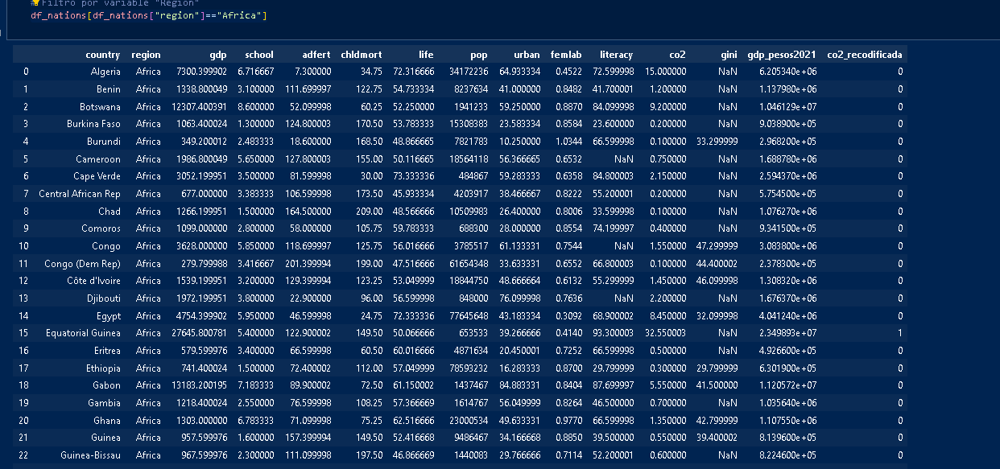Ahora con Europa
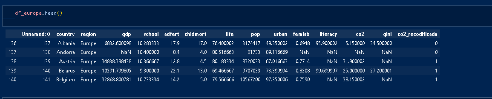Pedimos saber la media de alfabetización de ambas regiones por separado
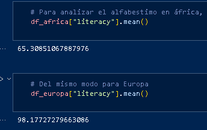De lo anterior se desprende que Europa tiene una tasa de alfabetismo de 98,1% mientras que en África alcanza sólo al 65,3%.
Ahora vamos a ver en preguntas más detalladas.
*¿Cómo se distribuye el índice de Gini en la muestra?
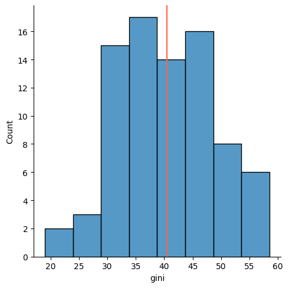Vemos que el Gini tiene una distribución normal, con una concentración entre los 30 y 50 de índice, y una media de 41.
*Muestre la tasa de mortandad de chicos entre países de África y de Europa
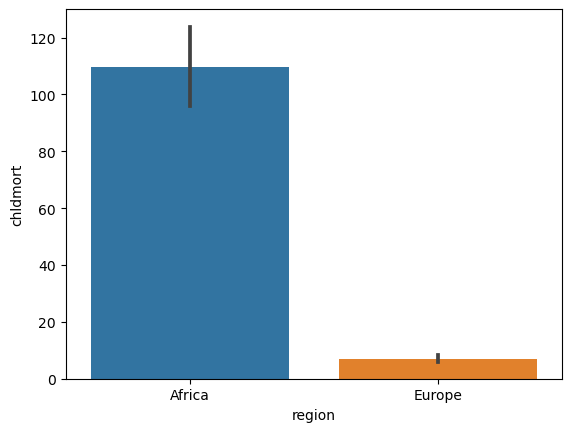
*Muestre cual es el nivel de alfabetismo en las américas y comparado con la del resto del mundo.
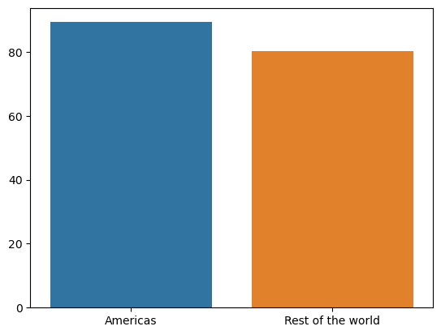muestre cómo es la distribución de la escolaridad en las distintas regiones/ (se hace con gráfico de cajas por facilidad de presentación)
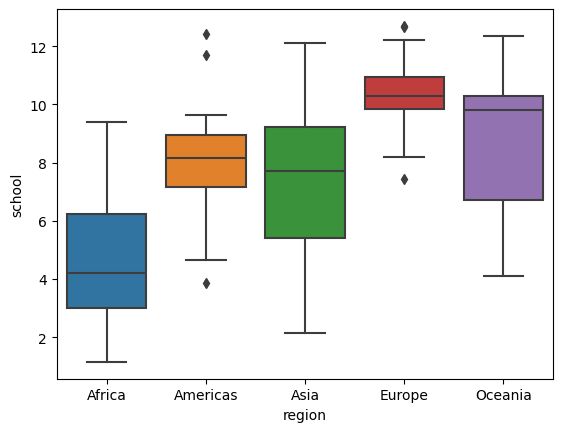Muestre cómo es la distribución de alfabetización según el año de escolaridad
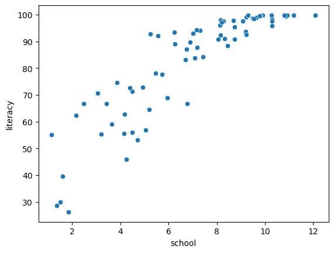Por último, genere una matriz que muestre como es la correlación entre las características de la base de datos.
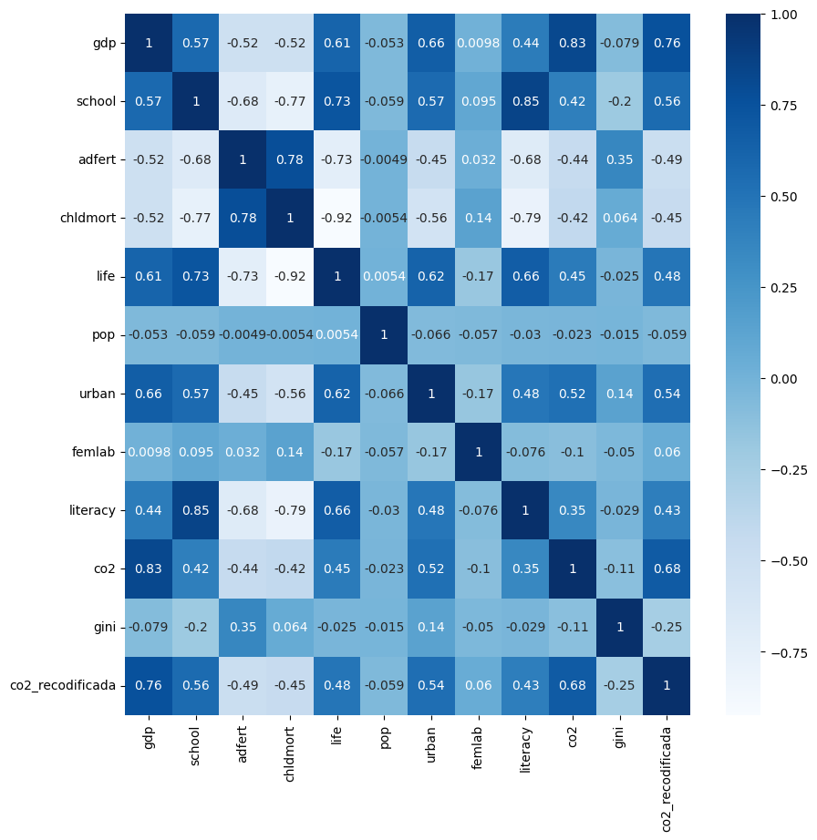Dentro de las principales correlaciones existentes, nos encontramos con la correlación positiva entre mortalidad infantil y tasa de fertilidad adolecente, también la correlación positiva entre el promedio de años de escolaridad y tasa de alfabetización. Correlación entre PIB per cápita y porcentaje de población urbana.
Esto muestra como una variable afecta a otra, un estudio superficial que no debe tomarse como una relación estricta por falta de profundidad de análisis y no contar con los estudios para esta verificación.
En repaso se hizo:
- Previsualización de datos.
- Eliminación de datos irrelevantes.
- Tratamiento de datos.
- Visualizacion de datos.
- Manipulacion de Base de Datos.
- Creación de variable relevante.
- Testeo de modelo predictivo.
- Conclusiones finales.
Espero te haya gustado leerlo, recuerda que hay mas secciones que puedes explorar sobre los analisis que realizo, en la parte Mis Proyectos